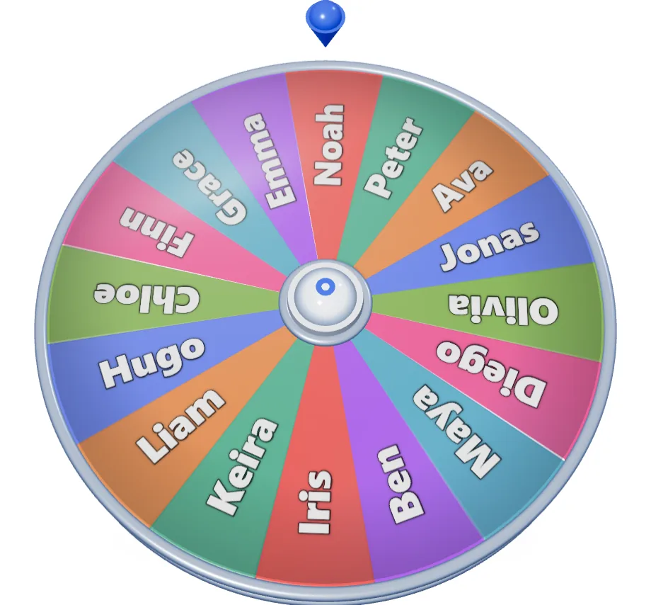

Home › Offline name picker
An offline name picker that keeps working when the internet drops
Many classroom tools fail exactly when you need them: the signal in the staff room is weak, the data plan ran out, or the school Wi-Fi only reaches certain rooms. This name picker keeps running because everything happens on the device, not on a server.
Open the name picker open once, then use it offline

How it keeps working without internet
On the first visit, the browser saves the files it needs — including the wheel and its random picker. Later visits are served from that copy. No request goes to a server, no name is sent anywhere, and no data is used beyond that first load.
Install it on the home screen (no app store)
Installing it as an icon opens faster and survives tab clean-up:
- Android (Chrome): open the page, tap the ⋮ menu, choose “Add to Home screen”.
- iPhone (Safari): open the page, tap the Share button, choose “Add to Home Screen”.
- Laptop or projector: open it in the browser and add a bookmark so it is easy to find again.
Try the wheel here
Press Spin — nothing is sent to a server.
The tool above runs right here. If the screen is too narrow, open a full tab.
What to know about offline mode
The saved copy is lost if browser data is cleared or a private window is used. If the wheel suddenly asks for a connection in class, open it once where there is signal, then use it as usual. The same applies after an update — one visit is enough.
When offline mode matters most
Activities that happen away from a Wi-Fi room: assemblies and pep rallies on the field, scout and club meetings, inter-class contests in the hall, or field trips where the signal is unpredictable. A tool that depends on a server fails exactly when everyone is watching.
Data use and privacy
The tool loads no ads, no third-party tracker that profiles you, and it does not ask for a phone number or an account. The only outgoing traffic is an anonymous visit counter the site owner uses to see how much the tool is used — with no student names and no list contents.
Frequently asked questions
Does this name picker really work without internet?
Yes, once the page has been opened one time. The wheel files are cached by the browser, so later spins run without a connection.
Do I have to install an app from the app store?
No. Just open it in the browser and choose Add to Home screen on Android or Add to Home Screen on iPhone.
Why does the wheel ask for a connection again after a while?
Usually because the browser data was cleared or the site was updated. Open it once where there is signal, then offline mode works again.
Is my student list sent to a server?
No. The list is stored only on the device you use.